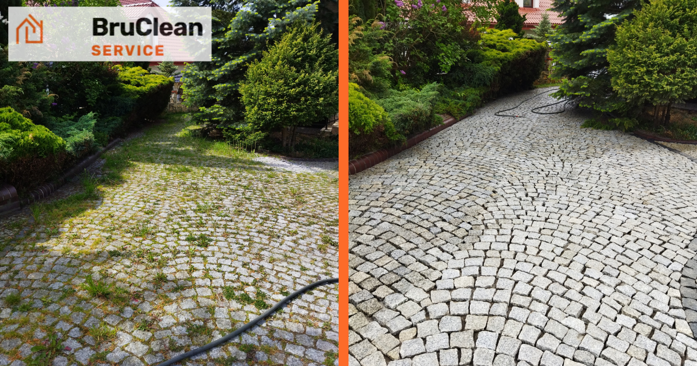

Plamy z oleju na kostce brukowej — co działa bez odbarwień
Opublikowano: 1 września 2026 · BruClean Service Kraków

Jeśli chcesz usunąć plamy z oleju na kostce brukowej bez ryzyka odbarwień, trzymaj się prostej zasady. Świeży wyciek najpierw zbierz chłonnym materiałem, a starsze ślady odtłuść dedykowanym preparatem do nawierzchni i dopiero potem spłucz szerokim strumieniem myjki. Zawsze zrób próbę w mało widocznym miejscu i omijaj agresywne rozpuszczalniki, bo to one najczęściej wybielają lub matowią kostkę.
Jak usunąć świeży wyciek oleju z kostki krok po kroku wygląda tak. Zasyp plamę piaskiem albo żwirkiem bentonitowym, dociśnij deską, odczekaj kilkanaście minut i powtórz, aż ziarno przestanie ciemnieć. Nie polewaj wodą na starcie, bo wprasujesz tłuszcz głębiej. Gdy powierzchnia jest sucha w dotyku, zastosuj łagodny odtłuszczacz do kostki, przeszczotkuj nylonem i spłucz.
Usługa profesjonalnego czyszczenia zwykle obejmuje ocenę rodzaju nawierzchni, punktowe odplamianie, mycie wysokociśnieniowe z regulacją mocy, a na życzenie także fugowanie i impregnację po czyszczeniu. Jeśli zastanawiasz się nad kosztem, cena zależy głównie od metrażu i stopnia zabrudzenia, rodzaju kostki oraz tego, czy potrzebne będą środki chemiczne i impregnacja na koniec. Przy dużych podjazdach sensownie jest porównać samodzielną pracę z wyceną ekipy, bo chemia i czas potrafią zjeść oszczędność.
Świeży wyciek zasyp chłonnym materiałem, stare plamy odtłuść i domyj ciśnieniowo
Przy świeżych wyciekach najpierw zatrzymaj migrację oleju. Użyj piasku, żwirku dla kotów lub trocin, rozprowadź cienko, dociśnij i wymień, gdy wchłonie. Jeśli po 20-30 minutach podłoże wciąż jest ciemne, dosyp kolejną warstwę. Woda, płyny do naczyń i myjka na tym etapie są błędem, bo tylko rozniosą tłuszcz po porach.
Po mechanicznym zbiorze przejdź do chemii. Nałóż środek odtłuszczający przeznaczony do kostki lub betonu, pozostaw go na tyle, ile zaleca producent, i szczotkuj krótkimi ruchami. Jeśli pracujesz na barwionej w masie kostce, trzymaj się neutralnego lub lekko zasadowego pH i unikaj preparatów z kwasem, bo potrafią rozjaśnić pigment.
Domycie ciśnieniowe rób szerokim wachlarzem i z odległości kilkudziesięciu centymetrów, tak aby nie wypłukiwać podsypki ze spoin. Przy fugach z piasku myj wzdłuż linii, a nie pod kątem w poprzek, to ogranicza ryzyko podmycia. Rotacyjnej dyszy używaj tylko na szorstkich powierzchniach i nigdy na szkliwionych krawędziach.
Plamy po paliwie zachowują się inaczej niż olej silnikowy. Benzyna odparowuje szybko, ale pozostawia tłusty cień, który wymaga intensywniejszego odtłuszczania i dłuższego czasu działania środka. Na otwartym terenie pracuj przy dobrej wentylacji i bez źódeł ognia, a przy dużym rozlewie rozważ wsparcie ekipy z dedykowanymi sorbentami.
Jeśli kostka ma fabryczną powłokę dekoracyjną lub jest mocno postarzana, rozpuszczalniki typu nitro, benzyna ekstrakcyjna i aceton to prosty przepis na trwałe odbarwienia. W takiej sytuacji wybierz środki opisane jako bezpieczne dla nawierzchni mineralnych i zacznij od słabszego roztworu. Lepiej myć dwa razy niż raz zniszczyć powierzchnię.
Rodzaj kostki ma znaczenie, betonowa, klinkierowa czy granitowa
Kostka betonowa jest porowata, więc olej potrafi wejść głęboko. Sprawdza się odtłuszczanie neutralne lub lekko zasadowe, a kwasy lepiej zostawić do wykwitów wapiennych, nie do tłuszczu. Mycie wysokociśnieniowe rób z umiarkowaną mocą i szeroką dyszą, bo zbyt ostry strumień wybije drobne kruszywo i rozjaśni płytkę.
Kostka klinkierowa ma niską nasiąkliwość, ale tłuszcz wnika w spoiny i mikropory. Unikaj mocno zasadowych odtłuszczaczy i rozpuszczalników, które mogą zmatowić lico. Jeśli lico jest szkliwione, nie używaj rotacyjnej dyszy i trzymaj większy dystans lancy. Punktowe czyszczenie z miękką szczotką daje tu lepszą kontrolę.
Kostka granitowa jest twarda i ma małą nasiąkliwość, ale źle reaguje na kwasy. Wybieraj preparaty neutralne albo delikatnie zasadowe i nie zostawiaj ich do wyschnięcia na powierzchni. Jeśli kostka jest płomieniowana, możesz pozwolić sobie na nieco intensywniejsze mycie, lecz fugi nadal traktuj ostrożnie.
Mycie wysokociśnieniowe czy chemiczne odplamianie, kiedy które wybrać
Sama woda pod ciśnieniem świetnie zdejmuje nalot, glony i brud mineralny, ale z tłuszczem radzi sobie przeciętnie. Olej wiąże się z porami i wymaga odtłuszczenia. Dlatego przy typowych wyciekach najlepiej działa połączenie chemii punktowej z myciem wysokociśnieniowym na koniec.
Są jednak sytuacje, gdy warto ograniczyć jedno z narzędzi. Jeśli spoiny są luźne, ciśnienie zredukuj i skup się na chemii. Gdy temperatura powierzchni jest bardzo wysoka, na przykład w pełnym słońcu latem, chemii nie kładź, bo odparuje zbyt szybko i może zostawić smugi.
- Wybierz głównie mycie wysokociśnieniowe, gdy brud to nalot, mech i kurz, a plamy z oleju są punktowe i świeże
- Postaw na chemiczne odplamianie, gdy ślad jest stary, wielowarstwowy lub pochodzi z paliwa
- Połącz oba podejścia, gdy potrzebujesz równocześnie przywrócić kolor większej powierzchni i usunąć tłuste punkty
Jeśli chcesz zobaczyć pełny zakres robót w wersji profesjonalnej, opisaliśmy to przy usłudze mycie kostki brukowej. Znajdziesz tam informacje o czyszczeniu spoin, odplamianiu i impregnacji po pracach.
Czy impregnacja po czyszczeniu naprawdę ogranicza wnikanie oleju
Tak, dobra impregnacja tworzy hydrofobową i często oleofobową barierę, która spowalnia wnikanie tłuszczu. W praktyce zyskujesz czas na reakcję. Jeśli wylejesz kroplę oleju na zaimpregnowaną powierzchnię i zetrzesz ją w ciągu kilku minut, śladu zwykle nie będzie. Na niezaimpregnowanej kostce ta sama kropla wsiąka szybciej.
Impregnat nakładaj dopiero po całkowitym wyschnięciu podjazdu. Po intensywnym myciu często potrzeba co najmniej jednej doby bez deszczu. Na świeżo ułożonej nawierzchni lepiej odczekać kilka tygodni, aż ustabilizują się wykwity i wilgotność w przekroju kostki.
To nie jest magiczna tarcza. Impregnat nie cofnie istniejących odbarwień i nie zastąpi czyszczenia. Przy kostce klinkierowej połyskliwej wybieraj środki zalecane przez producenta płytek, a przy granicie unikaj powłok, które mogą tworzyć film. Jeśli nawierzchnia jest już mocno zwietrzała, z łuszczącą się starą powłoką, najpierw trzeba ją zdjąć albo odpuścić impregnację. Inaczej tylko zamkniesz brud pod warstwą ochronną.
Kiedy domowe sposoby nie działają i co grozi odbarwieniami
Domowe środki działają na świeże, małe plamy. Gdy ślad ma miesiące albo lata, a kostka jest nasiąknięta w kilku warstwach, kuchenne detergenty i szczotka rzadko wystarczą. Wtedy potrzebne są dedykowane odtłuszczacze, czas działania i finalne mycie, często w dwóch rundach.
Najczęstsze błędy to rozpuszczalniki typu nitro, proszki ścierne i druciane szczotki. Pierwsze wyciągają pigment z kostki, drugie rysują powierzchnię, a trzecie potrafią zostawić metaliczny nalot, który z czasem rdzewieje. Zbyt ciasny strumień myjki także wybiela pasami i wypłukuje spoiny.
Jeśli po teście w niewidocznym miejscu pojawiło się jaśniejsze kółko, przerwij i zmień metodę. Gdy plama pochodzi z paliwa i rozlała się na dużej powierzchni, nie próbuj ogrzewać jej opalarką. To po prostu niebezpieczne.
Duży metraż lub plamy po paliwie, gdzie zgłosić darmową wycenę w Krakowie
Przy dużym metrażu lub trudnych plamach po paliwie szybciej i bezpieczniej bywa zlecić pracę ekipie. W Krakowie darmową wycenę przygotowuje BruClean Service, a w ramach zlecenia realizuje ocenę rodzaju kostki, punktowe odtłuszczanie, mycie wysokociśnieniowe z regulacją oraz, w razie potrzeby, fugowanie i impregnację po czyszczeniu.
Ile kosztuje usuwanie plam z oleju w Krakowie bez podawania cennika z góry? W praktyce decydują cztery rzeczy: metraż i stopień zabrudzenia, rodzaj kostki, dostęp do wody i prądu oraz to, czy po odtłuszczeniu planujesz impregnację. Żeby porównać oferty sensownie, przygotuj zdjęcia problematycznych miejsc i orientacyjny metraż podjazdu.
Jeśli olej rozbił się w pobliżu ściany i są zacieki, po odplamianiu nawierzchni możesz jednorazowo ogarnąć także mycie elewacji. A gdy planujesz pełne odświeżenie podjazdu na sezon, najwygodniejsze terminy wypadają wiosną i jesienią, kiedy powierzchnia szybciej schnie i chemia działa równomiernie.
Najczęstsze pytania
Czy impregnacja po czyszczeniu naprawdę ogranicza wnikanie oleju?
Tak, dobra impregnacja tworzy hydrofobową, a często też oleofobową barierę, która spowalnia wnikanie tłuszczu i daje czas na reakcję. To nie zastępuje czyszczenia i nie cofnie istniejących odbarwień, dlatego impregnat nakładamy dopiero po dokładnym umyciu i całkowitym wyschnięciu powierzchni.
Ile kosztuje usuwanie plam z oleju na kostce brukowej w Krakowie?
Cena zależy głównie od metrażu i stopnia zabrudzenia, rodzaju kostki, dostępu do wody i prądu oraz tego, czy po odtłuszczeniu planowana jest impregnacja. Dokładną wycenę przygotowujemy po zdjęciach lub oględzinach — bezpłatnie.
Czy kostkę betonową, klinkierową i granitową czyści się tak samo?
Nie. Betonowa najlepiej reaguje na odtłuszczacz neutralny lub lekko zasadowy, klinkier źle znosi mocno zasadowe preparaty i rozpuszczalniki, a granit nie lubi kwasów. Środek i moc myjki dobieramy do konkretnego materiału.
Kiedy lepiej zlecić usuwanie plam profesjonalistom, a nie robić tego samodzielnie?
Przy dużym metrażu, starych, wielowarstwowych plamach lub rozlewach paliwa — domowe środki radzą sobie dobrze tylko ze świeżymi, niewielkimi śladami. Źle dobrany rozpuszczalnik albo zbyt mocny strumień myjki potrafią trwale odbarwić lub zmatowić kostkę.
Masz na podjeździe trudną plamę z oleju albo paliwa? Wyślij zdjęcie — powiemy szczerze, co się da zrobić.
Zapytaj o darmową wycenę